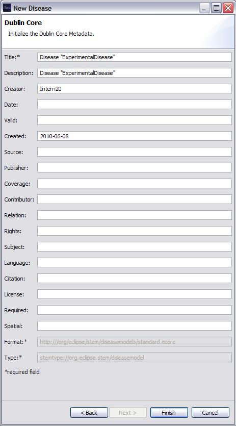

The New Disease Wizard is used to create and define the
properties of a new Disease. A file name for the new instance along with the Disease Name must be provided.
Parameters that can be specified depends upon the particular disease model selected in the Disease Model drop-down.
For example, for an SI model, the parameters are:
- Disease Name
- Population: i.e., human
- Time Period (TP): In milliseconds, the reference time period all rates are in relation to.
- Frequency Dependent: Yes or No. If No, the disease model assumes density dependency and transmission rates are scaled according to the local population density.
- Reference Pop Density: PM/SQ KM. The reference density, only used when frequency dependent is No
- Transmission Rate (Β). The transmission rate of the disease
- Non-Linearity Coefficient: Must be greater than or equal to 0.0. Incidence is (&Beta)*S*I^exp
- Infectious Recovery Rate (γ): PM/TP*
- Infectious Mortality Rate (μ ι): PM/TP*
- Characteristic Mixing Distance: In kilometers, the distance threshold where the population is assumed fully mixed.
- Road.Net.Inf.Proportion: Fraction per Road
